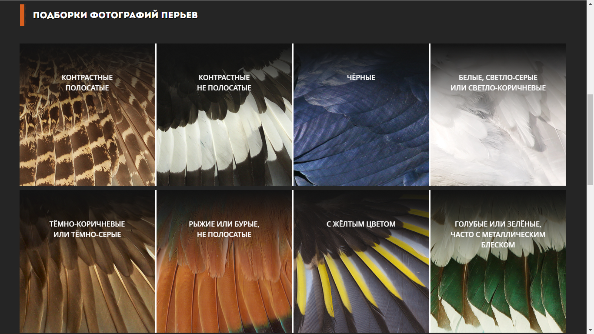
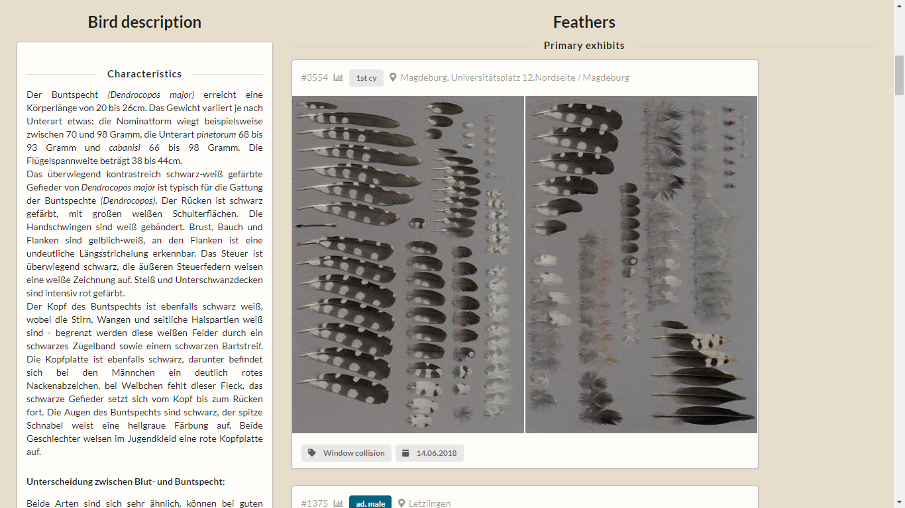
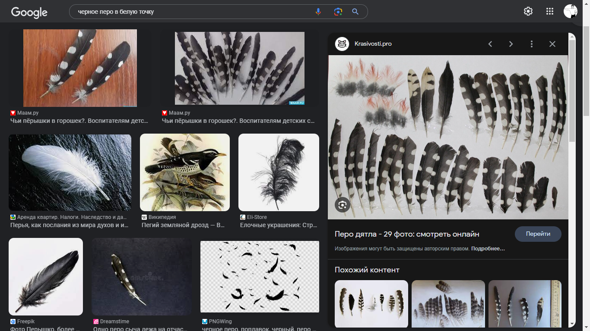
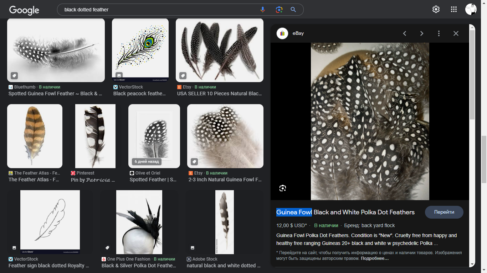
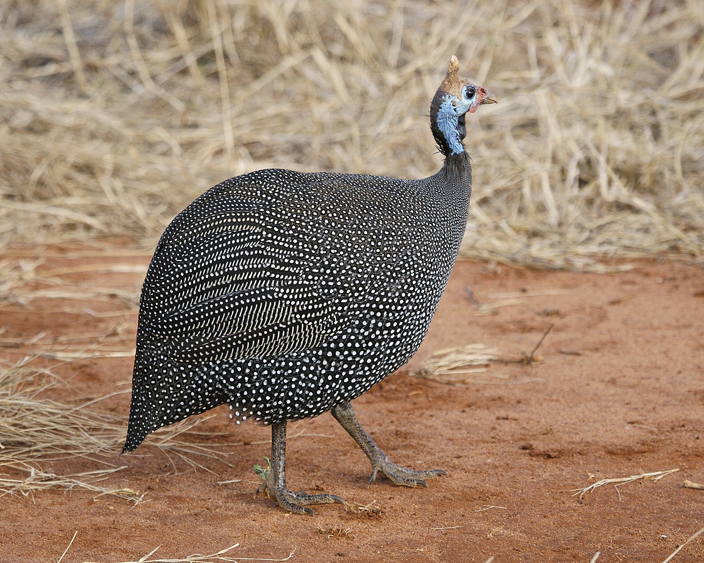

сайт featherlab

Каталог Ульяновского областного краеведческого музея имени Ивана Гончарова, где можно попробовать определить перо автоматически или выложить его фотографию на Форум. Там же хранится Атлас-определитель перьев птиц с фотографиями и названиями.
сайт featherbase

Огромный каталог перьевых коллекций. Сюда полезно обращаться, когда уже знаете примерный род или вид птицы, оставившей перо. Искать удобно по латинскому названию вида.
запрос в поисковике
Часто смешной запрос помогает найти доселе неизвестную птицу за пять минут, так что не стоит стесняться глупых вопросов. Например, введя "черное перо в белую точку", мы мгновенно обнаруживаем дятла. То же самое на английском: "black dotted feather" — добавило еще и цесарку.

(⇧ наведите ⇧)

(⇧ наведите ⇧)

(⇧ наведите ⇧)
Полезно знать, какие птицы водятся в вашей местности. Об этом говорилось в разделе "Как узнать птицу по голосу".